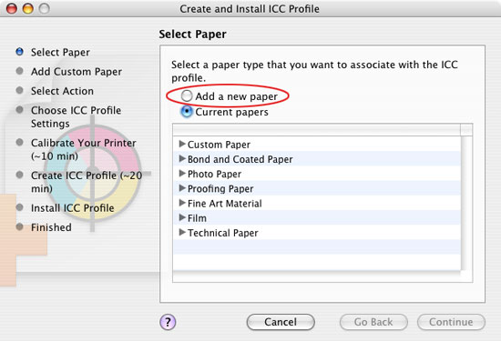
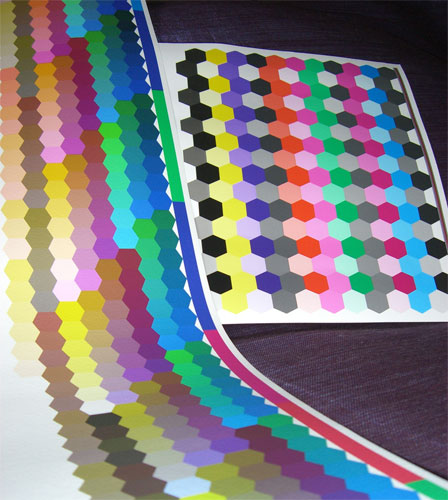
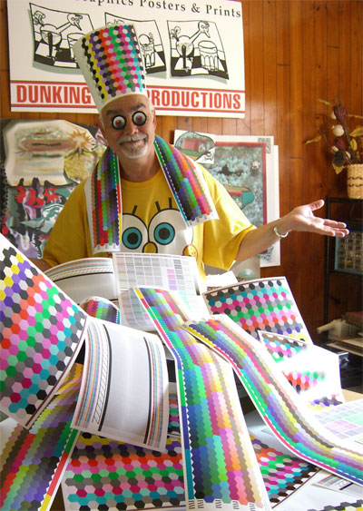
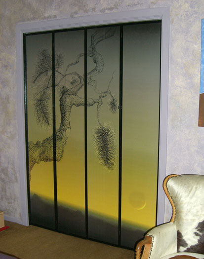

A Digital Artist's Journal
Part III
From the Box Up
by JD Jarvis
Life with a new printer
A Digital Artist's Journal
Part III
From the Box Up
by JD Jarvis
Life with a new printer
Humidity Makes a Believer Out of Me
4/30/2007
For me, paper profiles are data files that you receive from somewhere outside your own world. Geeky third parties in lab coats laboriously create them in order to maximize the performance of a certain printer/paper/ink combinations and to enhance my behind-the-curve feeling. The world of profiles is confusing (I was never quite sure where the profiles went and were stored or if they were actually being used), time consuming, expensive and, as in my case, unsatisfying.My first impression upon being told that the Z3100 employed its own on-board spectrophotometer to create custom profiles was pretty much a big, so what? I figured I would still have to use Photoshop to make adjustments to images in order to get them to look right, especially when moving from one type of paper to another. To compound this, I had promised the artists who were supplying me with test images that I would not make any adjustments to their files, but rather print them directly as is in order to test the Z3100 and not my own eye or skills in negotiating a match between screen and expectations. I thought that this would make it easier for me, but as the time came to begin printing I really wondered about the results.
True to its form throughout the Z3100 project, HP makes it very easy to acquire, download and use paper profiles. From the HP Print Utility located directly on the Dock of the MAC OS, you arrive at the website from which you can download new firmware, drivers and paper profiles. The next time you go to the printer driver you get a reminder that the profiles on your computer are more up-to-date than those on the printer and you are given a one click solution to sync the computer?s library with the printer?s or visa versa as is the case after you load new firmware directly to the printer. This process is repeated for any computer on your LAN, without you having to remember which machine has the latest and greatest information on papers.
Using the factory profiles I became immediately aware of the consistency (and speed) with which the Z3100 system can switch between papers. For example, images printed on the HP Litho-Realistic paper, which does not employ optical brighteners and therefore has a bit of an egg-shell tint, appear identical when printed on a much brighter and textured paper, such as the HP Hahnemuhle Watercolor paper. And, these images also exhibited a high degree of similarity to what I could see on my Sony CRT. (Which, by the way, I calibrate rarely employing only the advanced profiling routine common to all Adobe Photoshop users. My theory is that of many of the artists I know life is too short and there is too much art to be made to spend more than the minimum time calibrating equipment.) But, was this consistency because of the profiles or all the other advances in color gamut and dot size, etc. etc?
The Ah Hah! moment came for me when I decided to print an image on paper that was not included in the HP pre-manufactured profile library. This would entail the creation of my first custom paper profile using the highly touted Gertag i1 spectrophotometer. If the system worked as expected, that image would be a good match to the same image printed on these other papers, which had been profiled by the factory.
I chose a paper I had used for a long time on the CP2500, the HP RC Matte Photo paper, a fairly substantial paper which a smooth bright printing surface and a resin coating on the back which allows it to stand up to a good ink soaking without warping. At 200 gms (so called, grammage ) this paper is about the maximum thickness one could use on the CP2500. The profiling process begins in the HP Color Management Center, which again launches from the dock on a MAC running OSX. (See Figure 13.) Clicking on add a new paper begins a mostly automatic process that allows you to name the new paper which will, from that point on, be found at both the printer?s front control panel and on your computer?s printer driver.

Figure 13: Here is the first screen in the Profiling process. Note the procedure to be followed along the left hand column.The first step is to select the paper type. Paper Type and Paper Profile are two different animals. Selecting Paper Type evokes a set of factory-determined parameters under which the printer will perform. These parameters include carriage height, (which relates directly to paper thickness) ink limits, (which relates to paper absorption), the speed with which the ink heads will travel across the paper and more. Selecting the right paper type is important because it must relate to the physical aspects of the paper and how the printer will handle that media. If you do not like the results, chances are you can improve the printer?s performance by changing the paper type and re-profiling the paper. This happened to me when I first selected Photo Matte, as my paper type for the RC Matte Photo paper. That choice seemed a no-brainer, but as it turns out the better paper type for this substrate is Super Heavyweight Coated.
Once this choice is made the Z3100 calibrates itself in preparation for profiling. What is the difference between calibrating and profiling? It helps me to think of calibration as being the more physical aspect of the process, in which the printer adjusts itself to perform to the maximums set by the paper type that it has been told is on-board. The printer prints and scans a pattern (see the test image on the right of the photo) and makes adjustments to optimize to its pre-set performance. (See Figure 14.) Profiling (if you will tolerate the anthropomorphism) is more cerebral or sensitive taking into account nuances and refines the printer?s performance to a wider range of colors and conditions using a more complex pattern (seen on the left in the picture). Both processes utilize the i1 spectrophotometer and together it takes about 20 minutes to arrive at the end of the whole process.

Figure 14: On the right is the Calibration test pattern and on the left is the Profiling pattern.Another difference between calibrating and profiling is that once a paper has been profiled, there is little need to profile it again, but you may have to re-calibrate the printer to perform to the optimum called for by the paper profile. However, unlike the CP2500, which re-calibrated each time I loaded different media, the Z3100 retains and recalls the calibration as you move from paper to paper; or it will warn you in the front panel when it is advised to re-calibrate. This results in a real savings in terms of materials and time and makes for very smooth and easy experimentation with different media, as you search for just the right look for a particular piece.
So, as it turned out, the image I printed on the RC Matte had some aspects which I preferred over, not only the same file printed on the old 2500 (which one would hope to expect), but also over the prints I had made on the Z3100 with the new HP papers using the factory paper profiles. Now, how could that be? I had expected a match, but now I had a print that I liked better than the previous prints. The difference had to lie in what the factory profile had set up for that paper and what I had done, apparently for the better, in my own studio. In addition to adding new papers, the Z3100 on-board profiling system allows you to associate your own profile to one created and named by the factory. In a sense, you can overwrite the factory profile with your own. And, since it is a simple process to reset to the factory profiles, I decided to re-profile the HP factory setup for the HP Hahnemuhle Watercolor paper.
The results was a print that was a better match to the print I preferred on the RC Matte paper. That is, after re-profiling the Watercolor paper I, now, had the same results I saw on the RC Matte paper, for which I had also created my own profile. But, why should a paper profile created in an air conditioned lab on the shore of the Mediterranean in Northern Spain yield different results than the profile I had created in my studio located at 4,000 feet above sea level where the southern tip of the Rocky Mountains meets the Northern tip of the Chihuahua Desert?
I hate to admit it, but it took me quite awhile to realize the difference that air pressure and relative humidity might have on such essential aspects of inkjet printing, as dispersion, absorption or drying time. I live in an environment that averages between 9 to 20 percent humidity. When I finally got wise enough to check on this, I learned that most of the operating specs for the papers I use start at 30% humidity and range upward. The evaporative air-cooling systems (a.k.a. swamp coolers) we desperately refer to as air conditioners in Southern New Mexico quit working above 20% humidity. When it does rain (average nine inches per year) the water vapor in the air shoots up to 80 per cent or better and then drops down to 10% by dawn (depending on the wind) only to rise again as the sun burns off the previous excess rainfall. Ah-freakin-Ha!
It became clear why I had never fully appreciated factory or third-party profiles. These profiles could not possibly have been created for the extreme conditions in which I live and print. Of course, I had to resort to tweaking the file in order to see the performance I expected. Having been soured on profiles in general I never made the connection as to why I would want to spend the extra money and time to develop my own. And, it was much easier to write the whole profiling thing off as another one of those arcane and geeky digital endeavors. At the same time, I went about developing my own arcane and geeky remedies for dealing with the imagined shortfalls of color profiling.
Putting the foibles of being human aside, humidity (or the lack thereof) had made a believer out of me. I quickly became a profiling fool and re-profiled every paper I could get my hands on. (See Figure 15.) With the results being an amazing match of image files printed across a wide variety of papers. I am a firm believer in using qualified inkjet papers. Why not have a team of paper manufactures and printing engineers standing behind you? But, with the Z3100 and its Gertag i1 spectrophotometer your confidence level as a printmaker and your ability as an artist to explore and experiment with a wider range of on or off-the-shelf materials is hugely enhanced.

Figure 15: The new Pope of Profiling.Getting Our Papers in Order
5/7/2007
A brief look at the HP qualified papers we have been using for these tests is in order. Keep in mind that with the ability to create my own color profiles that are easily adaptable to the rapidly changing ambient environment in which I work, I am no longer limited to just a few hard earned choices. Virtually any material manufactured for inkjet printing or prepared with such products as inkAID to accept inkjet inks can be profiled and used to make a digital print. The Z3100 still has some limitations as to the ultimate thickness (just at 1mm) and flexibility of the substrate (the sheet fed paper path is not a straight through path). But for Myriam and me a whole new and world of papers has opened up and will no doubt occupy us for a good long time.Our extended (and growing) media line up begins with the Heavyweight and Super Heavyweight Coated papers. These have always been just for temporary poster applications. But now that they can exhibit a good image match to the other papers we use, I see using these papers to make proofs as we work with and develop an image file. Sometimes you just have to print an image to really see what you are getting at. These coated papers will retain their value for us in the creative process as they are now a reliable and affordable match to the results we are likely to see in a finished print on more expensive papers.
Next up is the RC Matte Photo paper described previously. For affordable art prints and photographic clients that prefer a totally matte finish this is a good choice. The paper will retain its pure white nature as long as most traditional photo papers, but this may not be as long as one would expect for fine art prints. We have many of our images printed and framed under glass using this paper and have seen no degradation, however I have seen some yellowing of RC Matte that was not behind glass.
At 240 gms I hesitated to run the HP Aquarella through the CP 2500, but this is not a problem with the Z. Aquarella is a mould-made matte paper with a texture similar to watercolor papers. It is a natural paper, which usually translates into no optical brighteners and is noted as being good for more transient uses such a posters, invitations or cards. Rated at about 1 year of lightfastness there are textured art papers that have better longevity ratings.
A new paper for Myriam and me is the HP Matte Litho-Realistic. At 270 gms it has a very substantial feel. It is a wood-free, neutral ph paper with a slight egg-shell tint, which prints up brilliantly. Rated at 114 years of outdoor lightfastness and excellent water resistance, this is a paper that will need no over-coating when used for framed art and will most likely become a real workhorse paper for us; especially for imagery in which we want the digitally created textures in a piece to shine rather than the texture of the paper.
Moving up a notch, HP Hahnemuhle Smooth Fine Art Paper is a 265 gms, 100 per cent cotton rag paper rated for 230 Wilhelm years of fade resistance under glass. It has a nice softness to the hand and seems a bit less stiff than the Litho-Realistic. A museum quality paper, for sure. There is one draw back that I experienced with these rag papers (this one in particular) and I am hoping that it was just the previous history of the used test roll that was sent me. But, I found that often these rolls of rag paper are covered with loose pieces of fibers, which if not discovered and brushed off, go through the printer and then fall off leaving a brilliant little white hole on your print. This is very aggravating because it is totally preventable and should not get past the manufacturer. It is not a defect in the coating, but rather little bits of debris that we have learned to brush off the roll as the paper is pulled through the machine. It gives us something to do rather than just watch the print head travel back and forth, but it is a real disappointment if you don?t catch each and every bit. There is a 310 gms version of this paper, as well.
It seems to me that if an image has large areas of color with no apparent texture, a paper with some of its own texture is a good choice. Otherwise, you might find your fine digitally created textures working against the texture of the paper. This is one reason I usually print with smooth paper, however, another reason may have been that I could not avoid head strikes on the CP2500 using these thicker papers. I may find myself changing my mind as I get to know the textured fine art papers better.
One such substrate is the HP Hahnemuhle Watercolor Paper. At 210 gms this paper has a nice cloth-like feel to it. Very pliable and soft, it is 50% cotton rag and acid-free. HP rates the paper at 165 years lightfastness, while Willhelm Research is betting on 230 fade resistant years under glass. All things are relative. I call them HP or Wilhelm years and regard them as a rating, not a promise. So, this is a great paper and using pigmented inks it is water resistant. I will save my lungs the stress of spray coating this one, which could give me several more JD years of life-fast-ness.
At the top of the line of papers I tested are the HP Hahnemuhle Textured Fine Art Papers at 265 gms and 310 gms. The texture is less pronounced than the Watercolor Paper and Aquarella, and it has the stiffest feel of all the papers, discussed here. It is 100% cotton rag, bright white. A relatively new paper, still being tested for fade resistance, but I am sure it will test quite well. It is also resistant to water when using pigmented inks. Definitely a museum quality paper.
For those who like to put their images on canvas I was able to test the HP Artist Matte Canvas (380 gms) and the slightly more glossy HP Collector Satin Canvas (400 gms). The prints are very vibrate and quite beautiful. Both are stretchable. HP recommends gluing down the Artist Matte to MDF using a product called Maxit by Daige. I would recommend spray coating both for added protection, especially the Collector Satin Canvas, which is simply not water resistant.
There is another group of substrates that I have been recommending for digital fine artists almost since the day Myriam and I began making our own digital prints. One is Tyvek, normally thought to be a signage and banner material. The other is Self Adhesive Vinyl. Tyvek is a tough, paper free, material that can be hung, stretched, molded, glued, sewn, framed? what have you. It is, therefore, a great material for use in installations and other off-the-wall exhibits for those of us thinking outside the frame. The Self Adhesive Vinyl is great for guerilla art, (such as making or altering bumper stickers) graffiti art, or even some designer/decorator touches, such as converting standard folding closet doors to elegant and colorful screens imprinted with original digital art. (See Figure 16.) HP has at least two of these materials that we were able to test. HP Banner with Tyvek and HP Self Adhesive Vinyl are each brilliant white matte surfaces that take ink as well as any of the fine art papers and, of course, due to their composition prove to be extremely tough and versatile. A creative and rambunctious mind should have no trouble seeing their value in making lively art projects.

Figure 16: These closet doors take on a real richness with a bit of digital art printed on Self Adhesive Vinyl panels and mounted directly to the old wooden surface.Factor in the two kinds of photo glossy papers we tested and the flexibility that the spectrophotometer allows and today?s digital artist is awash in a sea of decisions about which substrates to use. I suspect that Myriam and I will settle down to two or three favorite substrates, if not for aesthetic reason, then certainly because the cost of trying to stock every nice paper on the market is prohibitive. With prices that range from $177 per 100 foot rolls of Matte Litho-Realistic, to $237 per 35 foot rolls of Hahnemuhle Smooth Fine Art Paper and up to $340 for a 50 foot roll of Collector Satin Canvas we are ripe with options.
Since the beginning of this experience in March, Myriam and I have sent out well over 75 prints to that small group of test artists. We have shown them a mix of printing techniques and materials and asked them to respond to what they saw. It has become time to collect and contemplate their remarks and observations.
He Said, She Said
5/16/2007
Our test team consists of eight digital artists about the same mid-to-late 50?s and 60?s age group as Myriam and myself. Apparently digital art, at least the printmaking variety, is not a young person?s game. Many of us have had careers in other forms of art before enlisting. This includes experience in painting, sculpture, traditional printmaking, photography, video art, teaching and academics, anthropology and even psychology. Names will be withheld to protect the innocent and to keep me out of any more trouble than I already may be in.I sent each member several prints of their digital artwork printed at various d.p.i. on different types of papers, with the HP Gloss Enhancer on or off. I did not alter their files one bit, except in a couple of cases to enlarge files that were sent as straight e-mail attachments. However, most of the files were large ones that the artists had already printed and which they uploaded to my ftp site. I think all will agree that the ftp site is a perfectly acceptable way to deliver art files to be printed and some now have confirmation that attaching Genuine Fractal files to e-mails for enlargement at the printer's end works surprisingly well. (More about the implications of being able to deliver art in this manner later.) I labeled each print as to how and on what type of material it had been printed. I asked that in exchange for the prints each artist comment on topics, such as, what differences they saw (or not) in the prints, the quality of the image, which papers they liked and why, whether or not bronzing was an issue for them and how these prints compared to the ones they had created from the same files.
As previously reported in this Journal all agreed that there was no discernable difference between prints made at 600 d.p.i. versus 1200 d.pi. (Although Extra Passes is recommended to avoid banding on high gloss papers.) Concerning bronzing, no one expressed elation or relief that this problem had been stamped out. Some, in fact, were not aware of it until I pointed it out with the test prints. In other words a problem they did not know existed had been solved. O.K. But keep in mind that these folks are digital artists and not photographers per se. They normally print on matte fine arts papers, not glossy stock and may have never experienced bronzing in action, until the Z3100 eliminated it.
I received comments on the absolute neutrality of the black and white photographic prints I had sent to some. One stated that they had thought their black and whites were neutral until they had put these Z3100 prints next to them. Now, that they could see the slight cast of color in their prints they realized that they preferred the warmer tone of their originals to absolute neutrality. So, neutrality in black and white digital photo printing may be a lot like truth. Do you really want it? Can you handle it?
Everyone commented favorably on the richness of the blacks in their prints. I could well relate to this. Since I began printing on the CP2500 in 1997, I had adopted the practice of spray coating my prints even after pigmented inks arrived. I did this not only for the extra protection, but mainly because the blacks took on a richer, more alive tone after spraying. Now, with the HP Vivera pigmented inks being water resistant on the matte fine art papers and the ability for the Z3100 to print really luscious, limpid blacks, I am looking forward to not having to spray-coat prints intended for framed gallery exhibitions anymore.
Favorable comments kept coming in. The colors are bright. The colors are brilliant. The images appeared the same on different papers. But, underneath there was some strangeness. One artist's statement, that the colors were too brilliant and so dynamic that it made the work look like an illustration rather than art, gave me pause. I remember statements made about the cleaning of the Sistine Chapel when, to some eyes, the work went from old-world masterpiece to garish cartoon in one good cleaning.
Another artist wrote that the Z3100 prints were crisp and brilliant, an excellent match to the prints they had made of the same file and even a very good match to what they saw on their CRT. And, then went on to explain how they would go about making the Z3100 prints a bit duller to suit their taste. (?) I asked myself if the Z prints were too brilliant yet, they matched other prints and the CRT image perfectly; would the artist then be adjusting the other prints and their monitor to match their taste? When had really matching to the monitor image become a problem?
One artist responded directly that a print seemed too dark. I began to question, was it a matter of too much contrast? Were details missing in the blacks? Were the prints too dark or too saturated? Not necessarily, came the response. But there was some sort of theme, a kind of undercurrent seemed to be gathering. When I heard the comment; JD is obviously proud of his new printer, a little light went on. I am stepping on some toes, here.
If I had been an engineer who had developed this printer, I might have some reason to be proud. If my paycheck depended on promoting or selling the Z printer I might have room to be proud. If I had purchased this printer with my own hard earned cash, I might be proud. To be fully honest with myself (and you), I do take some pride in having worked at promoting digital art for so long and with enough apparent success to have HP want me to test and comment on their work. But it is HP's printer not mine. I had sent artists prints of their art in order to get their critiques. I was eager to take this criticism, because it is not my printer or my art. But, it is not their printer either, is it? Unfortunately, a bit of the old them vs. us may have crept into my experiment.
Epson vs. HP
If you ask nearly anyone to compare a digital art print made on the Z3100 to a print they already have, the chances are they made that print on an Epson printer. Without a doubt, Epson for several years has done a better job of capturing the bulk of the digital printmaking imagination and, for the most part, with good reason. My take on this is that it is nearly impossible to ask people to compare prints without this becoming an Epson vs. HP thing. And, people are (perhaps even subconsciously) very defensive about their investment and the quality of their artwork that has been produced. Any printer manufacturer who wishes to enter and win over a share of this market is going to have to deal with this built-in inertia. But, for us the end-users of digital art printing devices, adopting a them versus us approach is definitely grabbing the wrong end of the stick.I am convinced that inkjet printmaking has reached a certain technological plateau. Image quality, paper and ink longevity are at such known and highly expected levels that any printer manufacturer must meet these levels. Extremely good and long lasting prints are a given. The companies that develop and sell these printers can no longer compete based on more dpi or even a wider color gamut. This leaves price, cost and ease of operation, flexibility to use a wider variety of substrates, reliability, service and support as the areas in which these printer builders must compete to get us to buy their products.
As print makers we may no longer be able to claim that one print is better than another based on using X, Y or Z machine. But, as the playing field opens up we can expect more for our money, less cumbersome technology, more built-in features, better reliability, more support and services. Also, I foresee expanded partnerships between printer companies, artists, print-makers, galleries and markets. Linked by Internet, Art (how we make it, how we materialize it, distribute it and sell it) is changing. As a direct descendant of the technology involved, this is particularly true for digital art. Further, I expect that having reached technical plateaus in their primary markets (printers) that these companies will find value in supporting the dissemination and marketing of the artwork itself. In this regard we have no better model than Apple and its i-Tunes phenomenon.
This is where delivery of art files via the web, distant proofing, and reliable print quality no matter at what location the image file becomes a print is such a key ingredient and, perhaps, one of the most telling and forward looking aspects of the little test Myriam and I have been running. This is why them versus us is so antithetical to the further evolution of this art and its markets. It must become them and us. Do you want it? Can you handle it?
The Future of Printing
5/19/2007
It is time to wrap up this Journal and it just so happens that I have one story left that will do just that. During the last meeting of the Creatives Advisory Council (a committee which Hewlett-Packard had brought together to help them get a handle on the Z3100 product and the creative market they hope to attract for it) they asked us to look ten years into the future for ideas about where technology and markets may be. One of the specific questions they asked was whether or not we felt that print would survive in an expanded field of Internet and web delivery. I felt that was a very good question for engineers and scientists, who had put so much into building a printer, to wonder if there was going to be a need, at all, for such a device sometime down the line.Tony Chambers, creative director for Wallpaper magazine, had a great response. And, although he was coming at it from a literary and publishing point-of-view, I think it easily applies to fine art prints as well. We have heard for a long time now that the Internet and web, as well as the proliferation of large flat screen displays, might put an end to displaying and owning prints or static 2D art in general. That downloading animations and art along with distribution centers such as YouTube would put an end to owning prints, as well as purchasing hard copy magazines. Tony's reply was something along these lines: The Internet fulfills the need for what is immediate, global and current. Print, however, will always be that which is tactile, aesthetic, long lasting and beautiful.
Dear Journal, this and that...this AND that.
JD and Myriam Lozada-Jarvis
Las Cruces, New Mexico, USAMay, 2007